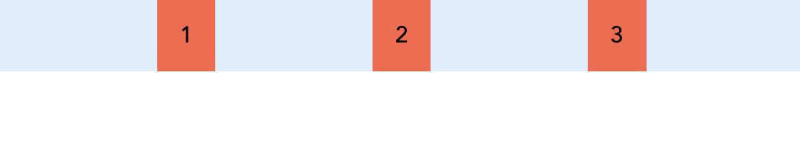
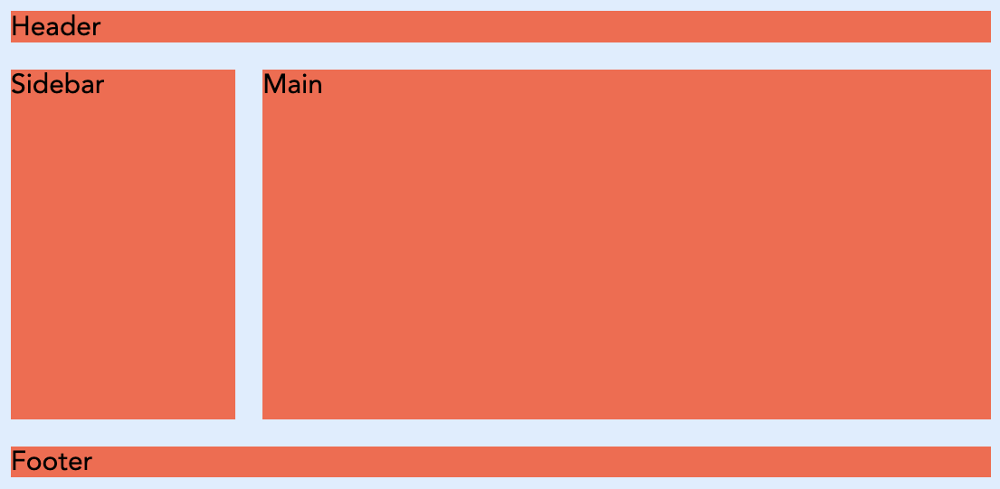

Layouts com Flexbox e Gridbox em CSS
Até agora, vimos como estilizar elementos individualmente. Mas como organizamos esses elementos numa página? Antigamente, os designers usavam float, position e table para criar layouts, muitas vezes com resultados imprevisíveis e pouco flexíveis.
Felizmente, o CSS moderno oferece duas ferramentas poderosas para a criação de layouts complexos e responsivos: Flexbox e Grid.
Flexbox (Flexible Box Layout)
O Flexbox é um modelo de layout unidimensional. Isto significa que ele organiza os elementos numa única direção: ou como uma linha (horizontal) ou como uma coluna (vertical). É ideal para alinhar itens dentro de um contentor, como botões numa barra de navegação, ou para distribuir espaço entre elementos de um componente.
Conceitos Fundamentais
Para usar o Flexbox, precisa de dois componentes principais:
- Flex Container: O elemento pai que contém os itens. Ativa-se o Flexbox aplicando
display: flex;a este elemento. - Flex Items: Os elementos filhos diretos do flex container.
<div class="flex-container">
<div class="flex-item">1</div>
<div class="flex-item">2</div>
<div class="flex-item">3</div>
</div>
Propriedades do Flex Container
Estas propriedades são aplicadas ao elemento pai (.flex-container).
display: flex;: Ativa o contexto de formatação flex.flex-direction: Define a direção do eixo principal.row(padrão): Da esquerda para a direita.row-reverse: Da direita para a esquerda.column: De cima para baixo.column-reverse: De baixo para cima.
justify-content: Alinha os itens ao longo do eixo principal.flex-start: Agrupa os itens no início.flex-end: Agrupa os itens no fim.center: Centraliza os itens.space-between: Distribui os itens uniformemente, com o primeiro no início e o último no fim.space-around: Distribui os itens uniformemente com espaçamento igual à volta de cada um.space-evenly: Distribui os itens uniformemente, com espaçamento igual entre todos.
align-items: Alinha os itens ao longo do eixo transversal (o eixo perpendicular ao principal).stretch(padrão): Estica os itens para preencher o contentor.flex-start: Alinha os itens no início do eixo transversal.flex-end: Alinha os itens no fim do eixo transversal.center: Centraliza os itens no eixo transversal.
flex-wrap: Permite que os itens quebrem para a linha seguinte se não houver espaço.nowrap(padrão): Todos os itens ficam na mesma linha.wrap: Os itens quebram para linhas adicionais.
gap: Define o espaçamento entre os itens.
Se aplicarmos ao exemplo acima o seguinte CSS:
.flex-container {
background: #def;
display: flex;
justify-content: space-evenly;
}
.flex-item {
padding: 1rem;
background-color: tomato;
}
obteremos três itens distribuídos uniformemente ao longo do contentor, com um fundo azul claro para o contentor e um fundo vermelho para os itens.

Propriedades dos Flex Items
Estas propriedades são aplicadas aos elementos filhos (.flex-item).
flex-grow: Define a capacidade de um item crescer se houver espaço extra. Um valor de1significa que ele ocupará o espaço disponível de forma proporcional.flex-shrink: Define a capacidade de um item encolher se não houver espaço suficiente.flex-basis: Define o tamanho inicial de um item antes que o espaço restante seja distribuído.flex: É um atalho paraflex-grow,flex-shrinkeflex-basis. Ex:flex: 0 1 auto;.order: Altera a ordem visual dos itens, sem alterar o HTML. O valor padrão é0.align-self: Permite que um item individual anule oalign-itemsdo contentor.
Grid Layout
O Grid é um modelo de layout bidimensional. Ele permite organizar conteúdo em linhas e colunas simultaneamente, como uma tabela ou uma grelha. É perfeito para o layout geral da página, como cabeçalhos, barras laterais, conteúdo principal e rodapés.
Conceitos Fundamentais
Assim como o Flexbox, o Grid tem um Grid Container e Grid Items.
- Grid Container: O elemento pai, ativado com
display: grid;. - Grid Items: Os filhos diretos do grid container.
<div class="grid-container">
<header class="grid-item">Header</header>
<nav class="grid-item">Sidebar</nav>
<main class="grid-item">Main</main>
<footer class="grid-item">Footer</footer>
</div>
Propriedades do Grid Container
display: grid;: Ativa o contexto de formatação grid.grid-template-columns: Define o número e o tamanho das colunas da grelha.- Ex:
grid-template-columns: 100px 1fr 2fr;(três colunas, a primeira com 100px, a segunda com uma fração do espaço e a terceira com duas frações). - A unidade
fr(fração) é muito útil para distribuir o espaço restante.
- Ex:
grid-template-rows: Define o número e o tamanho das linhas.grid-gap(ougap): Define o espaçamento entre as linhas e colunas.gap: 20px;(espaçamento de 20px para linhas e colunas).row-gap: 10px;column-gap: 15px;
grid-template-areas: Permite nomear áreas da grelha para posicionar itens de forma mais semântica.
.grid-container {
background: #def;
height: 100vh;
display: grid;
grid-template-columns: 1fr 3fr;
grid-template-rows: auto 1fr auto;
grid-template-areas:
"header header"
"sidebar main"
"footer footer";
}
.grid-item {
background: tomato;
margin: 0.5rem;
}
div.grid-container header {
grid-area: header;
}
div.grid-container nav {
grid-area: sidebar;
}
div.grid-container main {
grid-area: main;
}
div.grid-container footer {
grid-area: footer;
}

Propriedades dos Grid Items
grid-column-start/grid-column-end: Define em que linha de grelha a coluna do item começa e termina.grid-row-start/grid-row-end: Define em que linha de grelha a linha do item começa e termina.grid-column: Atalho paragrid-column-start/grid-column-end. Ex:grid-column: 1 / 3;(ocupa da linha 1 à 3).grid-row: Atalho paragrid-row-start/grid-row-end.grid-area: Associa um item a uma área nomeada emgrid-template-areas.
.header-item {
grid-area: header;
}
.sidebar-item {
grid-area: sidebar;
}
Flexbox vs. Grid: Quando usar cada um?
A regra geral é:
- Flexbox para componentes e alinhamento unidimensional: Use-o para barras de navegação, listas de cartões, ou qualquer coisa que precise ser alinhada numa única direção (linha ou coluna).
- Grid para o layout geral da página e alinhamento bidimensional: Use-o para a estrutura principal da sua página, onde precisa de controlar tanto as colunas como as linhas.
A melhor parte é que eles podem ser usados em conjunto. É comum ter um layout de página feito com Grid, e dentro de uma das áreas da grelha, usar Flexbox para alinhar os itens de um componente.
Exercício prático de Grid e Flexbox
Para praticar o que aprendeu, crie um layout simples de página usando Grid para a estrutura principal e Flexbox para alinhar os itens dentro de uma barra de navegação. Tente incluir:
- Um cabeçalho com o título do site.
- Uma barra de navegação com links.
- Um conteúdo principal com dois artigos lado a lado.
- Um rodapé com informações de copyright.
- Use Flexbox para alinhar os links da barra de navegação horizontalmente e Grid para organizar o cabeçalho, a barra de navegação, o conteúdo principal e o rodapé.